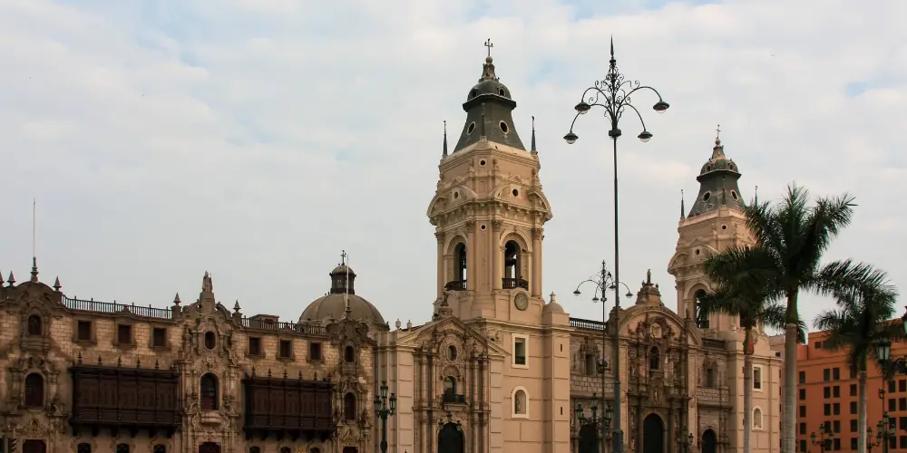

Home
Chamber
Contact
Discover Gallery
Events
Christmas Tree Lighting | Dec 10, 2023
Great Fireworks | Dec 31, 2023
News
"Emerging Markets Drive Global Trade Shift"
"Central Banks Reevaluate Policies Amid Stable Inflation"
"Tech Innovation Boosts Job Creation and Productivity"
Statistics
1 PEN = 0.28 USD
Annual Inflation: +2.3%
GDP Growth: +4.6%
Unemployment Rate: 3.9%
Stock Market Index: 1,245 points
Demographics
Population: 1,000,000
Literacy Rate: 90%
Entrepreneurship Index: 7.5
